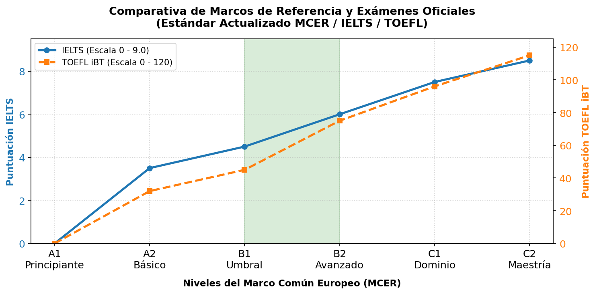

Galería


El nivel independiente del MCER (B1 y B2) marca el momento en que dejas de traducir mentalmente para comunicarte con fluidez y autonomía, permitiéndote resolver problemas cotidianos al viajar, interactuar de forma natural con hablantes nativos, comprender textos complejos y defender puntos de vista técnicos en entornos laborales.
El nivel B1 (Umbral) marca el inicio de tu autonomía lingüística, permitiéndote entender textos claros y desenvolverte con éxito en situaciones cotidianas de viaje o estudio. En esta etapa, eres capaz de describir experiencias, deseos y planes, justificar brevemente tus opiniones y redactar textos sencillos sobre temas familiares, resolviendo problemas del día a día sin depender de frases prefabricadas.
El nivel B2 (Avanzado) consolida tu fluidez y naturalidad al hablar con nativos sin esfuerzo, permitiéndote argumentar posturas complejas y entender ideas técnicas en tu campo de especialización. En esta etapa, te comunicas con total confianza en entornos profesionales y académicos, redactas textos detallados sobre temas diversos y defiendes tus puntos de vista con claridad y precisión sin mostrar signos de limitación lingüística.
Las certificaciones internacionales validan oficialmente tu nivel de idioma ante instituciones académicas y corporativas de todo el mundo, siendo indispensables para el éxito laboral y migratorio. Obtener títulos clave como Cambridge (PET/FCE), TOEFL o IELTS transforma tu conocimiento en un aval objetivo, abriéndote las puertas a procesos de selección globales, becas universitarias y puestos ejecutivos de alta competencia.
La comparativa de marcos de referencia sitúa al nivel independiente B1-B2 justo en el centro del Marco Común Europeo de Referencia (MCER), consolidándolo como el estándar global más exigido por universidades y empresas internacionales. Esta posición intermedia clave demuestra que el usuario ha superado la etapa de aprendizaje básico y posee la autonomía suficiente para integrarse con éxito en programas académicos extranjeros, aplicar a puestos de trabajo bilingües y cumplir con los requisitos oficiales de visados internacionales.
